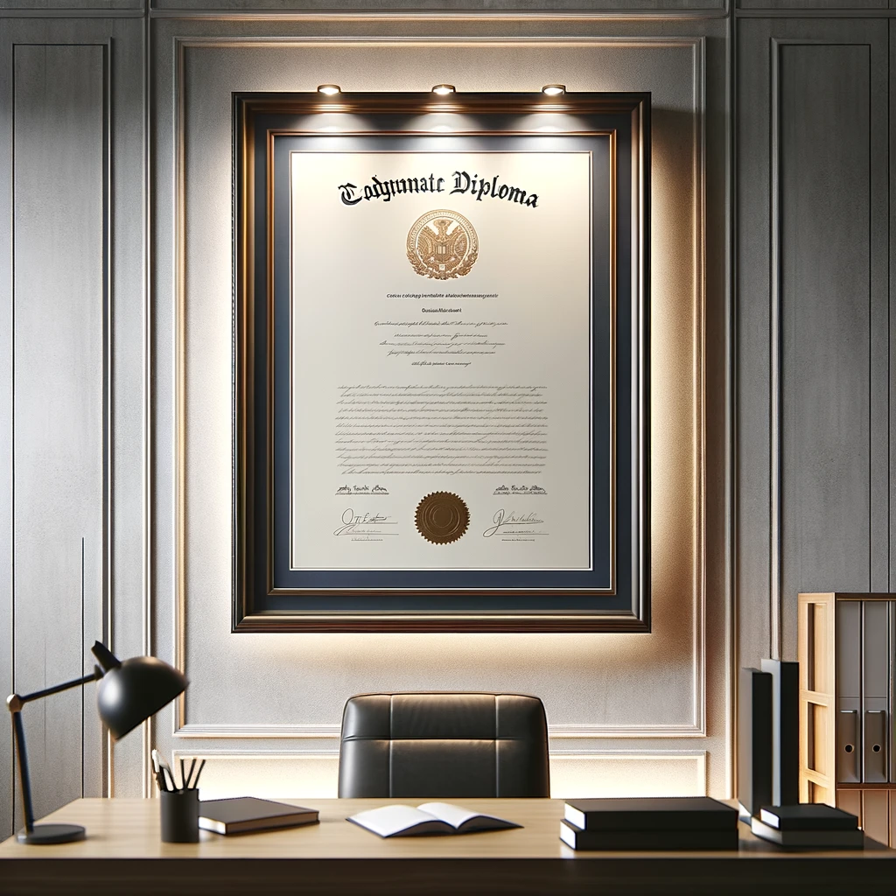

Profil
En reconversion professionnelle de chauffeur routier, passionné d’informatique depuis mon enfance, autodidacte et en cours d’obtention du Titre Professionnel Développeur Web et Web Mobile
Objectif
Je suis actuellement à la recherche d’une alternance pour la formation de Concepteur Développeur d’applications, à partir du 15/05/2024.
Hard skills
Dev web front-end
- HTML
- CSS
- Bootstrap
- Wordpress / Woocommerce
- Javascript
- Jquery
Logiciels et applications
- VisualStudioCode
- Xampp
- Phpmyadmin
- Github
- IA - ChatGPT - Dall-E ..
Design
- Figma
- Canva
Dev web back-end
- MySQL
- NoSQL
- UML
- PHP
- Laravel
Divers
- Composer
- Terminal
- Suite office
- Montage PC
- Montage vidéo (Sony Vegas)
Roadmap 2024
- Nodejs
- React
- Typescript
Soft skills
Rigoureux
- Code organisé, commenté et indenté
Créatif
- Adepte de brainstorming et de design UX / UI
Ponctuel
- Je porte une attention bien particulière concernant la ponctualité.
Esprit d'analyse et logique
- Très bonnes capacités d’analyse, de raisonnement et de traitement de problèmes divers.
Développement personnel
- Fervent pratiquant, je suis animé par la constante envie d’obtenir de nouvelles compétences
Diplômes et formations
Titre Professionnel Développeur Web et Web Mobile -
SJT Formation Creil (60)En cours
Titre Professionnel Développeur Web et Web Mobile -
Formation en ligneEn cours - en complémentaire
Classes militaires -
Ecole de gendarmerie de Fontainebleau (77)2013
Baccalauréat STI génie électronique -
Lycée Jean monnet Crépy en valois (60)2009

Expérience professionnelle
-
Formation développeur Web et Web Mobile
SJT formation Nogent sur Oise (60)Septembre 2023 - Mai 2024
-
Chauffeur Routier national puis régional
Transports Garnier / Sysco / CommereSeptembre 2019 - Août 2023
-
Préparateur de commande / Réceptionnaire
CNH / Sofadi TiasoDécembre 2015 - Septembre 2019
-
Gendarme
Groupement de gendarmerie d’Orléans (45)Septembre 2013 - Septembre 2015
-
Employé polyvalent/Manutentionnaire/Hôte de caisse
Postes divers et variés.Septembre 2009 - Septembre 2013
Langues
Français -
natif
Anglais -
très bon niveau lu, écrit, parlé et technique
Espagnol -
niveau correct lu, écrit et parlé
Centres d'intérêts
- informatique
- Nouvelles technologies
- Voitures anciennes
- Roadtrips en moto
- Jeux vidéos
Permis
Voiture, moto, remorque, poids-lourd et semi-remorque